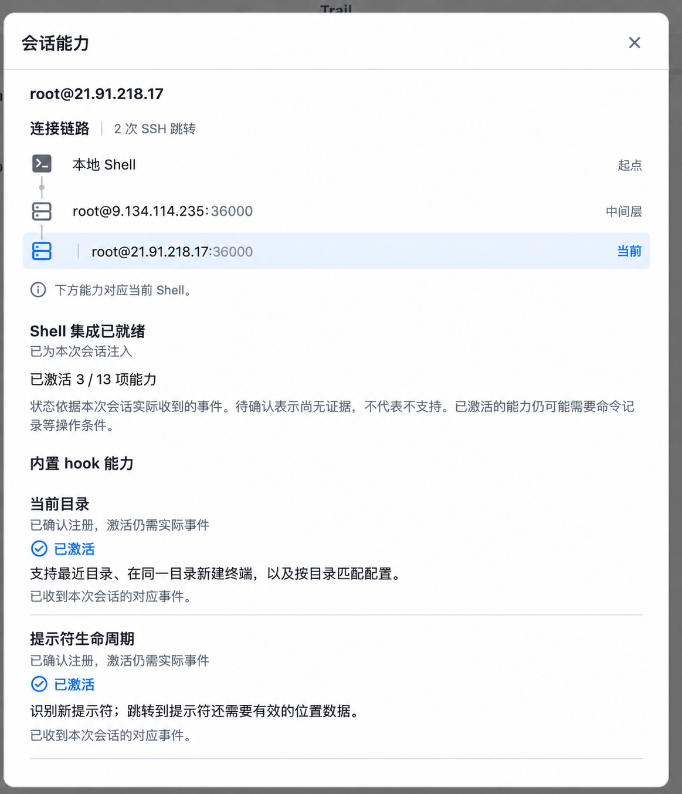
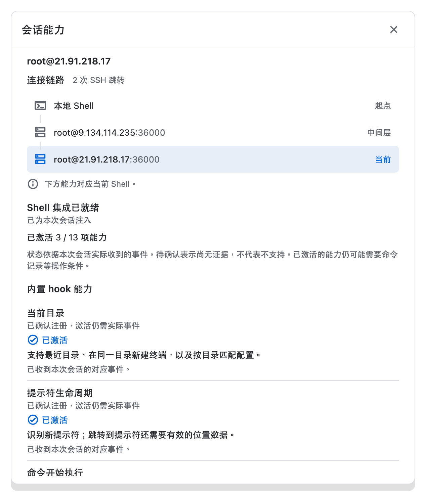

<!doctype html><html lang="zh"><meta charset="utf-8"><title>链路设计核对</title><style>body{margin:0;background:#f0f0f0;color:#222;font-family:system-ui}main{display:grid;grid-template-columns:1fr 1fr;gap:16px;padding:16px}section{min-width:0}h2{margin:0 0 12px;font-size:16px}img{display:block;width:100%;height:auto}section{overflow:hidden}.detail{height:215px;overflow:hidden;margin-top:18px}.detail img{width:600px;max-width:none;transform:translate(-12px,-65px)}</style><main><section><h2>选定设计</h2><div class="detail"></div></section><section><h2>Flutter 实际渲染</h2><div class="detail"></div></section></main></html>